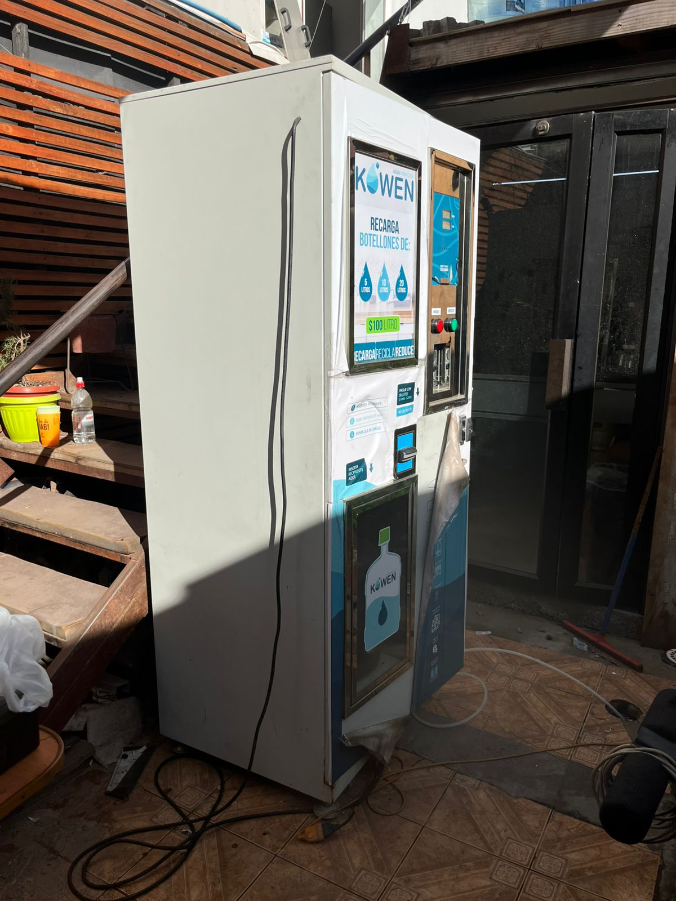
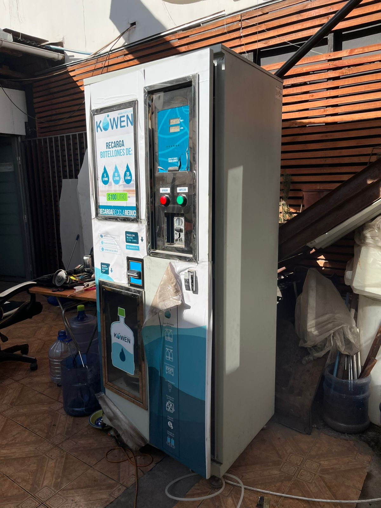

Última tecnología y máxima calidad. Agua purificada, conectada e inteligente.
Piloto Chile · 2026
Agua purificada por ósmosis inversa + UV, despachada por litro. El cliente llena su bidón, paga desde el celular y se fideliza. Vos operás toda la red desde tu teléfono.

Email o Google. Recarga de bienvenida gratis.
Saldo y packs prepagos con descuento, vía MercadoPago.
Recargas gratis, códigos de promo y premios por recurrencia.
Escaneás el QR de la máquina o entrás su código. Listo.
Recargas gratis y promos para captar; packs y consumo recurrente para retener.

Stack moderno y económico: el costo de operar la red crece muy por debajo de la cantidad de máquinas.
Espacio para tus cifras reales: tamaño de mercado, proyección de ventas, inversión buscada y uso de fondos.